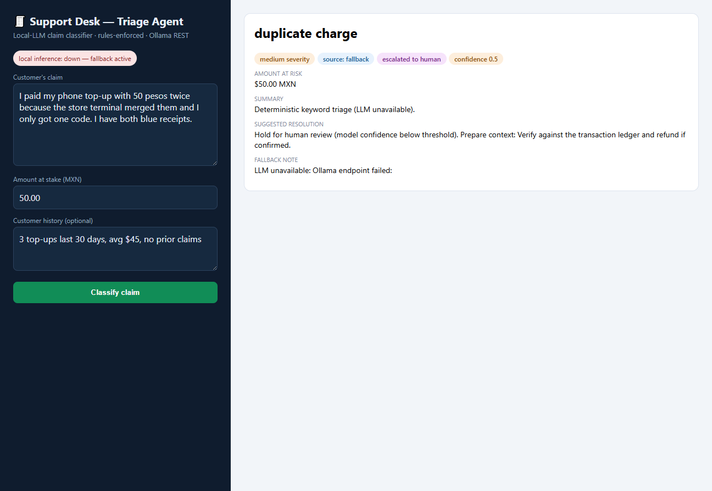

| Project | Business problem | Solution delivered | Impact |
|---|---|---|---|
| Reconciliation EnginePython · Pandas · tests | Daily reconciliation of operational records vs. billing/settlement (+240 invoices/day audited) was manual and missed systemic anomalies. | Modular pipeline: ingestion, cleaning, cross-matching by ID/amount, 4 deterministic anomaly rules, automated executive report. | Hours of manual cross-checking → 5-minute run; duplicate charges, mismatches and revenue leaks surface daily. |
| LLM Support DeskPython · Ollama REST · UI | Support triage of unstructured payment claims lacked consistency, rules and audit trails. | Agent flow: local LLM, code-owned prompt, JSON output contract validated fail-closed, deterministic business-rules layer, keyword fallback. | Runnable fully on-premise — no transaction data leaves the network; never executes an unvalidated model decision. |
| Document Layout AutomatorC# · .NET 8 · WPF | Staff manually re-laid-out files for downstream systems — repetitive and error-prone, zero tolerance. | Desktop MVP: declarative layout profiles (widths, padding, regex), per-line diagnostics, fail-closed generation, 5 xunit tests. | Discovery → MVP → delivery arc; operators fix the exact defect without training; partners never saw a bad layout again. |

12 automated tests protect the three suites and run on every push via GitHub Actions CI (three jobs, one per stack).
Demo data with planted anomalies is reconciled in the committed sample outputs — reviewers reproduce the exact numbers.
Screenshot: the support-desk UI classifying a duplicated top-up claim under the deterministic rules layer (fallback mode shown: keeps operating when the LLM is down).